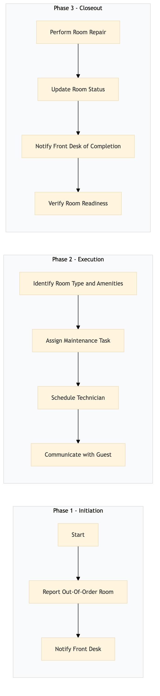

| Role | Steps |
|---|---|
| Maintenance Staff | 1.1 1.2 2.2 2.3 |
| Front Desk Agent | 1.2 2.1 2.4 3.3 3.4 |
| Maintenance Supervisor | 2.2 2.3 |
| Step | Name | Role | System | Input | Output | KPI | Dec? | Exc? | Pain Point / Risk |
|---|---|---|---|---|---|---|---|---|---|
| 1.1 | Report Out-Of-Order Room | Maintenance Staff | Oracle OPERA Cloud | Room number, issue description | Updated room status in Oracle OPERA Cloud | Less than 5 minutes to report | N | Y | Delayed reporting can lead to extended guest disruption. |
| 1.2 | Notify Front Desk | Maintenance Staff | Oracle OPERA Cloud | Room status update | Notification sent to Front Desk | Less than 1 minute | N | Y | Missed notifications can result in continued guest inconvenience. |
| 2.1 | Identify Room Type and Amenities | Front Desk Agent | Oracle OPERA Cloud | Room number | Room type, amenities list | Less than 2 minutes | N | Y | Incorrect identification can lead to improper replacement services. |
| 2.2 | Assign Maintenance Task | Maintenance Supervisor | Oracle OPERA Cloud | Room number, issue description | Task assigned to maintenance technician | Less than 3 minutes | N | Y | Delayed task assignment can prolong room downtime. |
| 2.3 | Schedule Technician | Maintenance Supervisor | Oracle OPERA Cloud, Book4Time | Task details | Scheduled technician arrival time | Less than 5 minutes | N | Y | Overlapping schedules can delay repairs. |
| 2.4 | Communicate with Guest | Front Desk Agent | Oracle OPERA Cloud, Marriott Bonvoy CRM | Room number, scheduled arrival time | Guest notification of repair schedule | Less than 2 minutes | N | Y | Uninformed guests may become frustrated. |
| 3.1 | Perform Room Repair | Maintenance Technician | Oracle OPERA Cloud | Room number, task details | Completed repair log | Less than 20 minutes per issue | N | Y | Complex repairs can extend downtime. |
| 3.2 | Update Room Status | Maintenance Technician | Oracle OPERA Cloud | Room number, repair log | Updated room status in Oracle OPERA Cloud | Less than 3 minutes | N | Y | Incorrect updates can lead to continued issues. |
| 3.3 | Notify Front Desk of Completion | Maintenance Technician | Oracle OPERA Cloud | Room number, repair status | Notification sent to Front Desk | Less than 1 minute | N | Y | Missed notifications can result in continued guest inconvenience. |
| 3.4 | Verify Room Readiness | Front Desk Agent | Oracle OPERA Cloud | Room number, repair status | Room readiness confirmation | Less than 2 minutes | N | Y | Premature room availability can lead to guest dissatisfaction. |
Process to manage out-of-order rooms at a Marriott full-service hotel, ensuring timely communication and resolution.